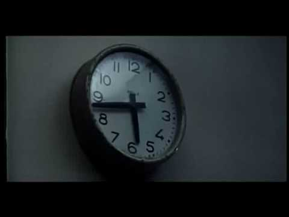

N'ayez plus peur des
dates et du temps
Connais ton ennemi et connais-toi toi-même eussiez-vous cent guerres à soutenir, cent fois vous serez victorieux.
Sun Tzu
Qui suis je?
- Benoît Lemoine
-
Développeur Fullstack
(TS, Scala, Rust, ...)
aimant la programmation fonctionnelle
chez Decathlon à Montréal - @benoit_lemoine
Durées
Qu'est ce qu'une seconde ?
La durée de 9 192 631 770 périodes de la radiation correspondant à la transition entre les deux niveaux hyperfins de l’état fondamental de l’atome de césium 133 non perturbé
Qu'est ce qu'une minute ?
60 secondes
Qu'est ce qu'une heure ?
60 minutes - 3600 secondes
Qu'est qu'un jour ?
24 heures - 86400 secondes
Mais... ce n'est pas la seule définition
Un jour est l'interval entre 2 passages successifs du Soleil au méridien local
Durée d'un jour solaire apparent ?

La vitesse de rotation de la Terre diminue
Un jour au Jurassique durait environ 23h
UT & TAI
Combien de jours se sont écoulés depuis le 1er janvier 1958, à minuit, à Greenwich (UK)
-
TAI: définition exacte du jour
-
UT: définition solaire du jour
En janvier 2021, il y a une différence de 37 secondes
Quel standard devrions nous utiliser ?

UTC
1 jour = 86400 secondes ± 1 seconde
Différence entre UT et UTC : 1 seconde maximum
Durée mesurée en jours
- La plupart des bibliothéque ne supporte pas les secondes intercalaires
- /!\ Faites particulièrement attention si vous avez besoin d'une précision à la seconde pour une durée entre plusieurs jours.
Durées et Périodes
- Durée: peut être convertie en secondes (minutes, heures, jours, etc.)
- Période: peut être convertie en secondes si on l'applique à un moment précis (mois, années, etc.)
ISO 8601 / RFC 3309
Définie une notation standard pour les durées et périodes
- P3Y6M4DT12H30M5S
- P5Y4D
- PT12H30M5S
- PT5S
Qu'est qu'une date ?
Une mesure du temps écoulé depuis un moment de référence
Un calendrier définie les unités utilisées pour écrire une date (semaines, mois, années, etc.)
Comment notre calendrier est-il défini ?
Calendrier Grégorien
1er janvier 1 est le moment de référence
La durée du jour est solaire
Qu'est ce qu'une année grégorienne ?
365 ou 366 jours, en moyenne 365.2425 jours
La Terre tourne autour du Soleil en ~365.2422 jours
La durée de l'année tropique augmente de ~500ms/année
Le calendrier grégorien défini aussi...
- Mois
- Jour de la semaine
Trivia et calendrier proleptique
En France, 1582-12-09 (julien) est la veille du 1582-12-20 (grégorien)
Au Royaume-Uni, 1752-09-02 (julien) est la veille du 1752-09-14 (grégorien)
Autre exemple :
le calendrier de l'hégire
Les jours sont solaires, l'année est lunaire (354 ou 355 jours)
Le moment de référence est le 16 juillet 622 (grégorien proleptique)
is
Timestamp Unix
Le moment de référence est le 1er janvier 1970 à minuit au méridien Z
Le nombre de seconde écoulée moins les secondes intercalaires
is
Qu'est qu'une heure de la journée ?
Le nombre d'heures, minutes, etc. écoulées depuis minuit heure locale.
Qu'est qu'un fuseau horaire ?
Une zone géographique dans laquelle minuit est défini comme étant le même moment
Un Offset n'est pas un fuseau horaire
America/Montreal : -4 ou -5
Les fuseaux horaires évoluent au cours du temps
https://www.iana.org/time-zonesMettez à jour vos OS, JRE, dépendances, etc.
Il vaut mieux stocker l'offset que la timezone pour les dates dans le passé
Il vaut mieux stocker la timezone pour les dates dans le future
Un timestamp n'a pas de timezone
Une timezone ne fait du sens que si le concept d'heure locale existe
ISO 8601 / RFC 3309
Définie une façon standard d'écrire des dates grégoriennes
- 2018-02-03
- 2018-02-03T04
- 2018-02-03T04:20:35
- 2018-02-03T04:20:35+03:15
Modéliser le temps
Un moment précis du temps - un instant
par ex. un timestamp ou
une date complète au format ISO
VS
Une information partielle - pas un moment précis dans le temps
par ex. une date sans heures, une date et heure sans offsets
Partiel ou pas ?
- timestamp unix 1000 Précis
- 2018-11-04 Partiel
- 2018-11-04T01:03:04 Partiel
- 2018-11-04T01:03:04 à Montréal Partiel !
- 2018-11-04T01:03:04+04:00 Précis
Utiliser des librairies !
- JS/TS : luxon, date-fns, Intl, etc.
- Java (JVM) : java time, jsr 310
- PHP : DateTime
- Rust : Chrono
- etc.
JavaScript example!
const d = new Date('2020-08-12T09:00:00Z');
d.getYear() // returns 120
d.getMonth() // returns 7
d.getHours() // returns 5 (on my computer)
Problème de l'égalité
- 2018-08-04T02:03:04+04:00
- 2018-08-04T04:03:04+02:00
Conclusion
- Manipuler le temps est compliqué. Réfléchissez toujours à 2 fois avant de faire quoi que ce soit avec.
- Choisissez la bonne abstraction (précis ou pas, avec ou sans timezone, avec ou sans heures, etc.)